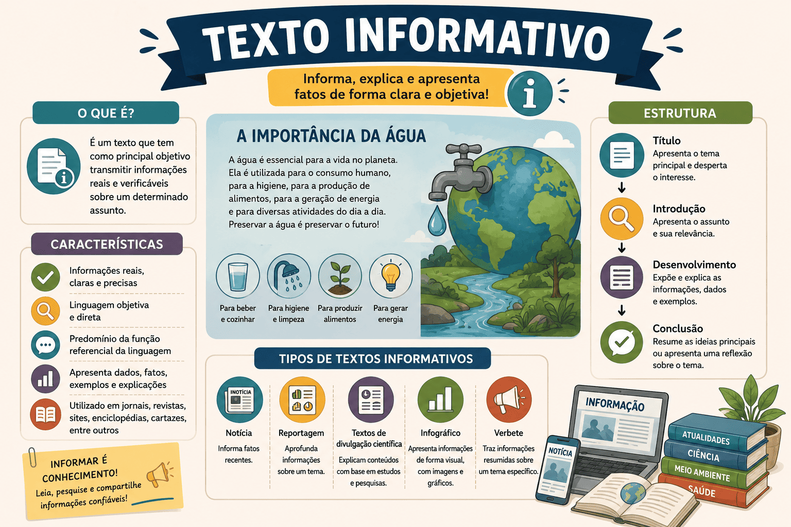

Texto Informativo: O que é, Características, Estrutura e Exemplos
Diariamente, somos bombardeados por uma quantidade imensa de dados: lemos notícias no celular, consultamos o significado de uma palavra no dicionário, lemos a bula de um remédio ou estudamos por um livro didático. Todos esses exemplos têm algo em comum: eles pertencem ao universo do texto informativo.
O texto informativo é fundamental na nossa comunicação em sociedade. Diferentemente de um poema, que busca emocionar, ou de um artigo de opinião, que busca convencer, o texto informativo tem um único e claro objetivo: transmitir conhecimento e dados sobre um fato ou assunto de maneira objetiva.
Nas provas do ENEM e em vestibulares de todo o país, a capacidade de ler, interpretar e extrair dados de textos informativos (como reportagens científicas, infográficos e notas jornalísticas) é testada em quase todas as disciplinas, não apenas em Linguagens.
Neste conteúdo, você aprenderá o que é o texto informativo, quais são as suas principais características linguísticas, como ele se estrutura e como as bancas costumam cobrar esse tipo textual associado às funções da linguagem.

O que é o texto informativo?
O texto informativo é uma produção textual cujo propósito principal é esclarecer, explicar ou transmitir informações sobre um determinado tema, pessoa, evento ou objeto. Ele faz parte do grupo dos textos de tipologia expositiva.
A regra de ouro desse tipo de texto é o compromisso com a clareza e com a verdade dos fatos. O leitor que busca um texto informativo deseja aprender ou se atualizar sobre algo, por isso, o autor deve evitar ambiguidades, duplos sentidos ou "enrolação".
Texto Informativo é aquele que se dedica a expor fatos, dados e conhecimentos de forma objetiva, direta e impessoal, utilizando a linguagem em seu sentido literal (denotativo) para informar o leitor sem a intenção de persuadi-lo emocionalmente.
Quais são as principais características do texto informativo?
Para garantir que a informação chegue de forma limpa e compreensível ao leitor, este tipo de texto obedece a um rigoroso padrão de escrita.
Marcas linguísticas e estruturais
- Objetividade e Impessoalidade: O texto vai direto ao ponto. Geralmente é escrito em 3ª pessoa (ele/eles), evitando o uso de "eu" ou "nós" para afastar o viés pessoal do autor.
- Linguagem Denotativa: As palavras são usadas em seu sentido real, literal, de dicionário. Evita-se o uso de metáforas, ironias ou figuras de linguagem que possam gerar dupla interpretação.
- Clareza e Precisão: Uso da norma-padrão da língua portuguesa. Frases costumam ser estruturadas na ordem direta (Sujeito + Verbo + Complemento) para facilitar a leitura.
- Ausência de Argumentação: O foco não é convencer o leitor a concordar com uma tese, mas sim apresentar-lhe a realidade dos fatos ou conceitos.
- Uso de Dados Comprobatórios: É comum a presença de citações de especialistas, dados estatísticos, datas e referências históricas para validar a informação.
Cuidado com a emissão de opiniões!
O limite entre informar e opinar é tênue em alguns gêneros textuais. No entanto, o texto estritamente informativo não deve conter juízos de valor (adjetivos como "infelizmente", "terrível", "maravilhoso"). Se o texto começar a defender um ponto de vista com forte apelo, ele deixará de ser informativo e passará a ser dissertativo-argumentativo ou opinativo.
Gêneros textuais informativos
O "texto informativo" não é um gênero único, mas sim uma característica predominante que abriga diversos gêneros que circulam no nosso dia a dia.
Informativos Jornalísticos
Textos que relatam fatos do cotidiano e acontecimentos recentes. Exemplos: Notícia, nota de esclarecimento, boletim meteorológico, reportagem (quando puramente expositiva).
Informativos Científicos/Técnicos
Textos que explicam conceitos, instruções ou descobertas acadêmicas. Exemplos: Verbetes de dicionário e enciclopédia, artigo científico, bula de remédio, livro didático, manual de instruções.
Qual é a estrutura de um texto informativo?
Embora varie de acordo com o gênero (uma notícia não tem o formato de uma bula), a imensa maioria dos textos informativos segue uma macroestrutura lógica para organizar as ideias de forma progressiva.
| Parte | Função no texto |
|---|---|
| 1. Introdução (Apresentação) | Momento em que o tema, fato ou conceito é apresentado ao leitor. No jornalismo, corresponde ao Lide (quem, o quê, quando, onde). |
| 2. Desenvolvimento (Explicação) | É a parte mais densa. Traz o detalhamento da informação: como aconteceu, por que aconteceu, métodos científicos, explicações técnicas e dados complementares. |
| 3. Conclusão (Encerramento) | Finaliza a exposição da ideia sem criar polêmicas ou propor intervenções sociais (como ocorre na redação do ENEM). É um fechamento lógico dos dados apresentados. |
Fique atento à Função da Linguagem!
Quando o ENEM traz um texto puramente informativo, a questão frequentemente cobra as Funções da Linguagem. Lembre-se: em textos informativos, a função predominante é sempre a Função Referencial (ou Denotativa), cujo foco central é o contexto, o assunto e a transmissão clara da mensagem.
Questão de aplicação
Questão: (ENEM / Adaptada) Leia o texto abaixo:
"O escorbuto é uma doença desencadeada pela deficiência grave de vitamina C (ácido ascórbico) no organismo. Os primeiros sintomas incluem fadiga, fraqueza muscular e dores nas articulações. Com a evolução do quadro, pode ocorrer sangramento das gengivas, perda de dentes e dificuldade de cicatrização de feridas. Historicamente, a doença afetava marinheiros em longas viagens devido à ausência de frutas cítricas e vegetais frescos na dieta a bordo."
Considerando as características e a finalidade do fragmento acima, é correto afirmar que ele se classifica como um texto:
- Argumentativo, pois busca convencer o leitor a consumir frutas cítricas para evitar doenças.
- Narrativo, uma vez que conta a história dos marinheiros durante o período das Grandes Navegações.
- Informativo, caracterizado pelo uso de linguagem objetiva, impessoal e denotativa para explicar um conceito científico e histórico.
- Injuntivo, pois prescreve um tratamento médico detalhado para a cura do escorbuto.
- Literário, dado o uso de linguagem rebuscada e metafórica para descrever os sintomas de uma patologia.
Resolução
A alternativa correta é a 3 — Informativo, caracterizado pelo uso de linguagem objetiva...
O texto cumpre exclusivamente o papel de esclarecer e expor dados sobre a doença (o que é, quais os sintomas e o contexto histórico), típico de um verbete ou manual técnico. Não há opinião do autor (eliminando a 1), não há predominância de ações no tempo (eliminando a 2), não há ordens ou instruções ao leitor (eliminando a 4) e a linguagem é estritamente literal (eliminando a 5).
Resumo: Como identificar o Texto Informativo?
O texto informativo é a base para o acesso à informação e ao conhecimento técnico e cotidiano.
- Objetivo Maior: Explicar, informar e transmitir conhecimento sobre a realidade.
- Estilo: Direto, claro, impessoal (3ª pessoa) e livre de "achismos" ou opiniões.
- Linguagem Predominante: Função Referencial da linguagem (foco no assunto) e sentido denotativo (dicionário).
- Principais Gêneros: Notícia, livro didático, verbete de enciclopédia, bula de remédio, artigo científico.
Perguntas frequentes sobre Texto Informativo
Texto informativo é a mesma coisa que texto expositivo?
Sim, na maioria das classificações escolares. O texto informativo pertence à tipologia expositiva. Geralmente, chamamos de "expositivo-informativo" aquele texto que se limita a apresentar dados, sem o intuito de argumentar sobre eles.
Um texto informativo pode ter traços de narração?
Com certeza! Uma notícia (texto informativo) narra um fato que aconteceu (quem fez o quê, quando e onde). A diferença é que trata-se de uma narração objetiva e real, e não de uma narração literária (ficcional) voltada para o entretenimento.
Como diferenciar um texto informativo de um artigo de opinião?
A chave é a impessoalidade. Enquanto o texto informativo expõe os dados de forma neutra ("O desmatamento aumentou 10%"), o artigo de opinião usa esses dados para defender uma tese e fazer julgamentos ("É inaceitável que o desmatamento tenha aumentado 10%, o governo precisa agir").
Continue estudando Produção Textual
- Como Fazer um Artigo de Opinião: estrutura, exemplos e passo a passo
- Texto Dissertativo-Argumentativo: estrutura, características, exemplos e como fazer
- Gêneros discursivos: conceito, tipos e exemplos
- Coesão, coerência e progressão temática na produção textual
- Competências da Redação do ENEM: guia completo das 5 competências
- Como Elaborar uma Boa Introdução e Tese para a Redação do ENEM
- Anáfora e Catáfora: o que são, diferenças, exemplos e como identificar
- Como Escrever uma Resenha Crítica: guia completo com estrutura e exemplos
- Produção Textual e Redação — página 1
- Produção Textual e Redação — página 2
Referências
FIORIN, José Luiz; SAVIOLI, Francisco Platão. Para entender o texto: leitura e redação. São Paulo: Ática.
MARCUSCHI, Luiz Antônio. Produção textual, análise de gêneros e compreensão. São Paulo: Parábola Editorial.
KOCH, Ingedore Villaça; ELIAS, Vanda Maria. Ler e Escrever: estratégias de produção textual. São Paulo: Contexto.
Explore Outros Conteúdos
Continue seus estudos acessando outras seções do site Mestre Kira: